Возгонка углерода вместо раздробления пигмента.
Как побочный эксперимент стал патентом RU 2 692 936 C1.
Не раздробление пигмента.
Возгонка углерода.
И — обработка не всей площади сразу,
а в два этапа с промежутками. © В. Микрюков, Патент RU 2 692 936 C1 · 2019
Как я набил себе тату для эксперимента — и вместо пузырей получил чистые «пятачки».
Открытие: Carbon Black возгоняется в CO₂ при пороге плотности энергии.
Параметры и алгоритм метода. Шахматная сетка. Два этапа.
5 причин, почему это работает лучше сплошной обработки.
Свежие клинические кейсы из практики.
Что я изменил в протоколе с 2019 года и почему.
История эксперимента, который
пошёл совсем не по плану.
К 2017 году я уже 9 лет работал с Nd:YAGNeodymium-doped Yttrium Aluminum Garnet — лазерная среда на основе неодима. Длины волн 1064 нм и 532 нм. Q-switchQ-switched — режим модуляции добротности. Наносекундный импульс с высокой пиковой мощностью. лазерами. Стандартная методика — сплошная обработка с перекрытием 15–30% — давала стабильный результат, но без «вау»-эффекта.
Меня беспокоило одно: границы безопасности. Где начинаются ожоги? Какова верхняя граница плотности энергии, при которой мы разрушаем пигмент, но не травмируем ткани?
В 2018 году я набил себе тату специально —
чтобы её удалять.
Цель эксперимента: найти пороги, где мы получаем пузыри и осложнения. Из личного разбора для клуба ЛазерПРО
Я три дня не спал — ломал голову, куда делся пигмент. По классической модели макрофаги должны прийти через 2–3 месяца. А тут — чистая кожа в моменте.
Я перерыл источники по фотофизике лазеров и наткнулся на описание процесса, который объясняет то, что я видел собственными глазами:
Пароуглеродная реакция — при достаточной пиковой мощности твёрдые частицы углерода возгоняются напрямую в газ, минуя жидкую фазу. Carbon Black → CO₂ за наносекунды.
Дальше — с супругой Ольгой и косметологом Натальей мы оформили метод как патент. Приоритет — 21 августа 2018 года.
Почему при высокой плотности энергии
Carbon Black переходит в газ.
Если 1 наносекунду принять за 1 секунду — тогда 1 обычная секунда превратится в 32 года. Вот насколько короткий этот импульс.
Anderson & Parrish, Science 1983. Концепция, на которой построена вся современная эстетическая лазерная медицина.
Эффект действия лазера будет только на те хромофоры, которые поглощают конкретную длину волны. Для каждого хромофора (гранулы пигмента, эритроциты, фолликулы) существует своя оптимальная волна.
Nd:YAG 1064 нм идеально поглощается тёмными пигментами и частицами Carbon Black — основой большинства тату-красок.
TRTThermal Relaxation Time — время, за которое частица отдаёт половину поглощённой энергии окружающим тканям. — время, за которое частица отдаёт половину поглощённой энергии в виде тепла окружающим тканям. TRT пропорционально квадрату размера частицы.
Частица успевает отдать тепло тканям — перегрев кожи, ожог, а пигмент не достигает температуры разрушения.
Вся энергия остаётся внутри частицы пигмента — она достигает нескольких тысяч градусов за наносекунды.
Именно поэтому наносекундные лазеры (Q-switch) — необходимое условие для безопасного удаления пигмента.
При достаточной энергии импульса
и пиковой мощности
твёрдый углерод переходит
напрямую в газ CO₂, минуя жидкую фазу. Пароуглеродная реакция · возгонка Carbon Black
Br J Dermatol 137(3):405–10
Гистология 35 тату после Nd:YAG: полное исчезновение частиц с вакуолизацией. Гипотеза о переходе пигмента в «атомарные виды и газообразные продукты».
PMID 9349338
Exp Dermatol 19(1):54–60
In vivo (мышь): лазер сокращает массу пигмента на ≈51%. Прямое количественное подтверждение — пигмент не только рассеивается, а исчезает.
PMID 19703227
Возгонка Carbon Black — не про «джоули вообще». Это комбинация трёх взаимосвязанных величин, каждая из которых должна перейти свой порог одновременно.
Ниже порога — пароуглеродной реакции не будет. Если хоть один из трёх параметров не дотягивает — пигмент дробится на фрагменты (стандартный эффект), но не возгоняется.
RU 2 692 936 C1 · заявка от 21.08.2018
Регистрация 28.06.2019.
| Параметр | Значение | Почему именно так |
|---|---|---|
| Длина волны | 1064 нм | Максимум поглощения тёмного пигмента и Carbon Black |
| Режим | Q-switch, наносекундный | Импульс короче TRT — вся энергия остаётся в частице |
| Плотность энергии | 5,5 Дж/см² | Порог пароуглеродной реакции для Carbon Black |
| Диаметр пятна | 4–5 мм | Достаточная концентрация мощности в центре пятна |
| Частота | 1 Гц | Точный контроль каждой отдельной вспышки |
| Порядок | Шахматный | Промежутки между пятнами = радиус пятна |
Классическая схема патента. Пятна первого прохода занимают «светлые» клетки шахматной доски, второго прохода — «тёмные». Каждое пятно касается соседей — покрытие ≈ 100% за два захода.
Обновление к патенту. При плотном пигменте, старых работах или рискованных зонах уменьшаем нагрузку — за каждый заход обрабатываем только треть точек. Три группы, три захода, полное покрытие.
48 часов — минимальный интервал. Тогда я был молод и хотел показать быструю схему.
10–14 дней — сегодня я даю ткани стихнуть от воспаления. За 48 часов не всё успевает.
В интервале обработанные «пятачки» проходят цикл восстановления: макрофаги начинают выводить остатки фрагментов, воспалительный ответ угасает, кожа готова к следующему воздействию — уже в пропущенные точки.
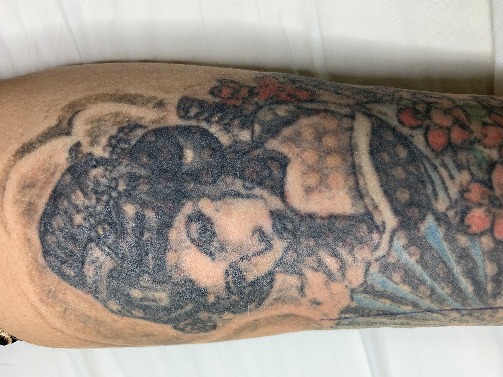
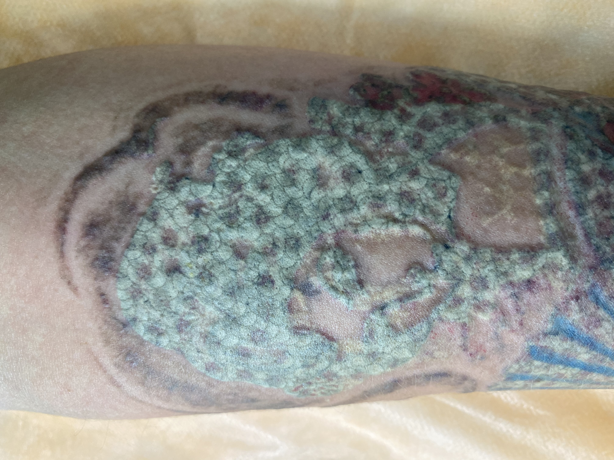
Криоохлаждение до и во время воздействия сбрасывает побочное тепло, распространяющееся от точки вспышки. Без охлаждения работать на плотности 5,5 Дж/см² небезопасно.
Клинический пример: одна пациентка нарушила режим охлаждения на предплечье — получила один маленький пузырёк. Всё остальное поле — без осложнений.
к.м.н., врач-хирург · клинические наблюдения, физическая интерпретация, оформление метода. Патентообладатель.
Супруга и соавтор. Совместный анализ клинических случаев в 2018.
Практикующий косметолог. Верификация метода на серии пациентов клиники.
Адрес патентообладателя: Ростов-на-Дону, ул. Красноармейская, 224/92, медицинский центр. Приоритет — 21.08.2018. Регистрация — 28.06.2019, бюллетень № 19.
«Способ удаления татуировок на коже, включающий фракционное воздействие на поверхность кожи Nd:YAG Q-switch лазером плотностью 5,5 Дж/см², частотой 1 Гц с диаметром пятна 4–5 мм, при этом воздействие лазером проводят в шахматном порядке в два этапа: на первом этапе с обязательным соблюдением расстояния между областями воздействия, затем на втором этапе через 48 часов — на участки, не обработанные ранее.» RU 2 692 936 C1 · п. 57 формула изобретения
5 преимуществ шахматной схемы
перед сплошной обработкой.
При случайной механической травме после процедуры повреждается вся сплошная зона обработки — одним массивом, целиком.
При такой же травме затрагиваются 1–3 небольших повреждения из сотен обработанных точек. Остальная зона — интактная кожа, которая держит структуру.
При обработке татуировки большими сплошными площадями формируется единый массив воспалённой ткани. Отёк и клеточная инфильтрация делают его ригидным: при движении подкожных мышц он натягивается — ощущение стягивания, ограничение подвижности.
При шахматной схеме между «пятачками» остаётся интактная кожа с нормальным тургором. Она принимает на себя механическое натяжение, поэтому воспалённые участки не растягиваются — подвижность сохраняется.
Дело не в скорости закрытия раны — раны здесь нет. Дело в объёме воспаления: чем меньше площадь, вовлечённая единовременно, тем легче ткани удерживают воспалительный ответ в пределах компенсации — и тем реже он переходит в осложнение.
Выделяемое в тканях побочное тепло, сопровождающее разрушение пигмента, успешно распределяется по необработанным участкам. Плюс контактное охлаждение (криопакеты, Zimmer Crio 6) — и мы полностью избегаем ожоговых осложнений.
При сплошной обработке всё тепло остаётся в одной зоне и суммируется. При шахматной — сбрасывается в холодные, необработанные соседние точки.
Использование более высоких плотностей энергии, чем в стандартной методике (5,5 Дж/см² vs типичные 3 Дж/см²), позволяет за одно локальное воздействие разрушить больший объём частиц пигмента.
Ключевой момент: высокая плотность работает только в паре с малым пятном (4–5 мм) и наличием необработанных зон вокруг. Иначе — ожоги. Именно шахматная схема даёт возможность безопасно использовать высокую плотность.
Меньше процедур, отсутствие «застывших» татуировок и рубцовой деформации — итоговый выигрыш и по времени, и по безопасности.
Клиническая оценка автора · © В. Микрюков, 2026
Свежие кейсы из практики
2022–2026.
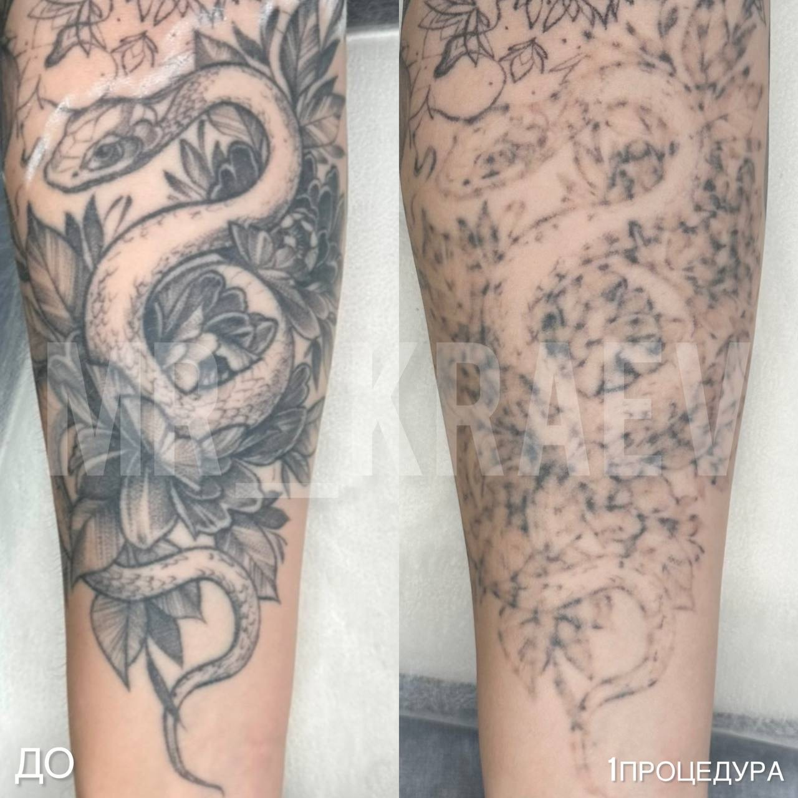
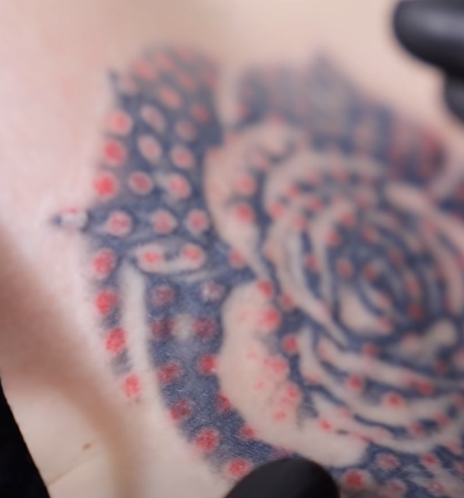
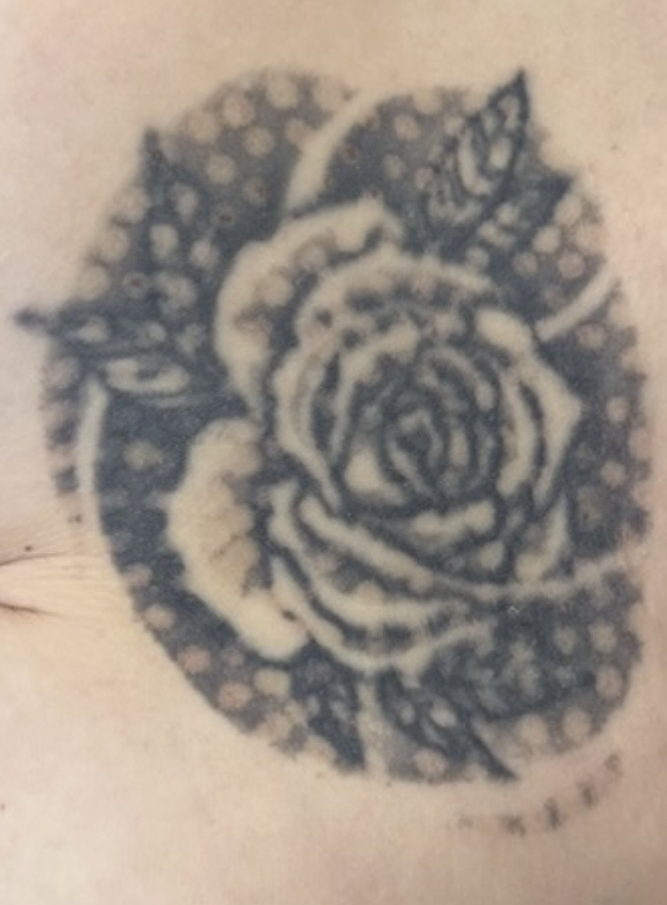
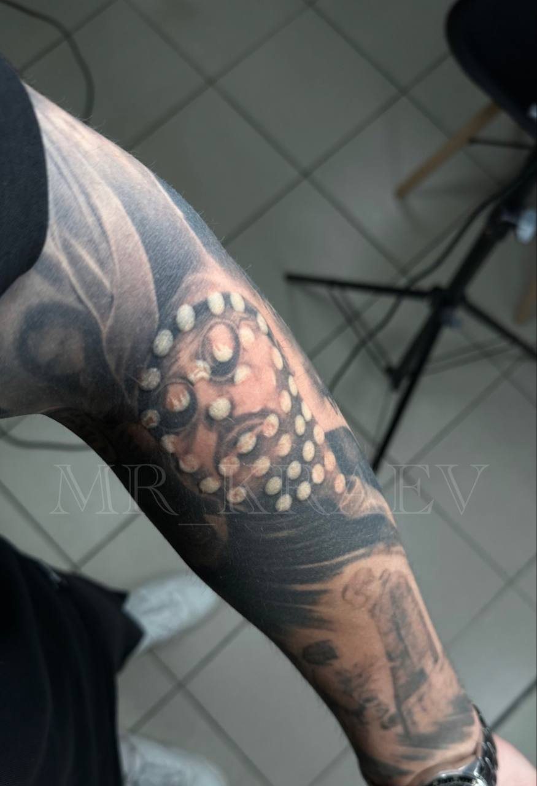
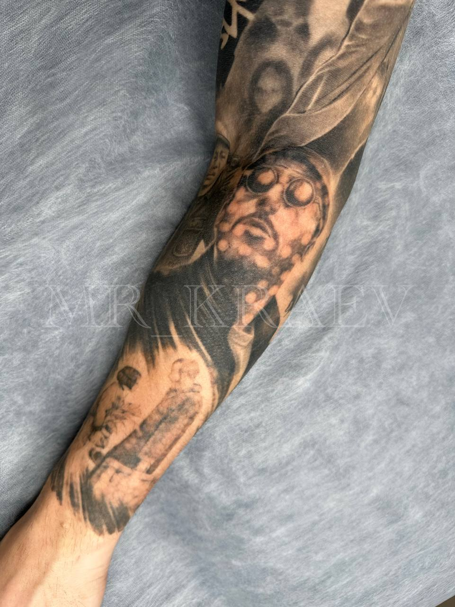
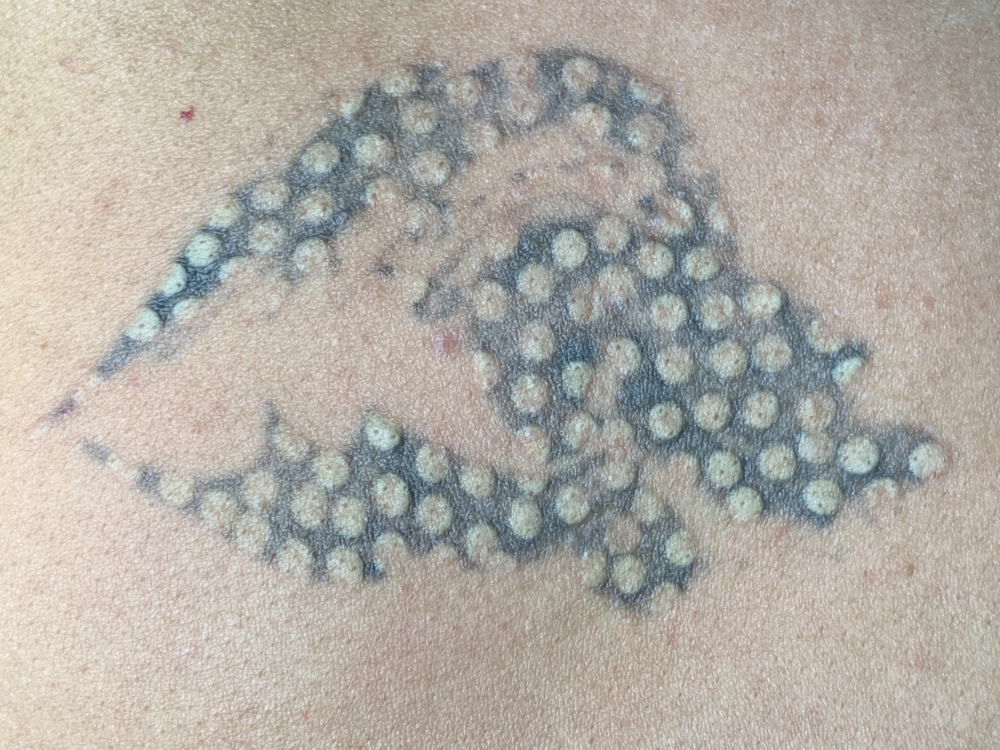
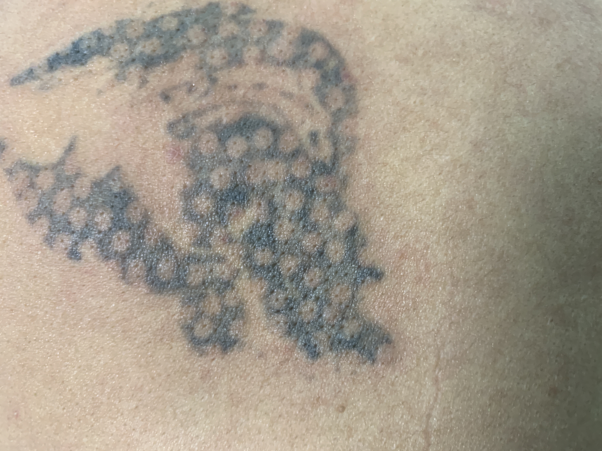
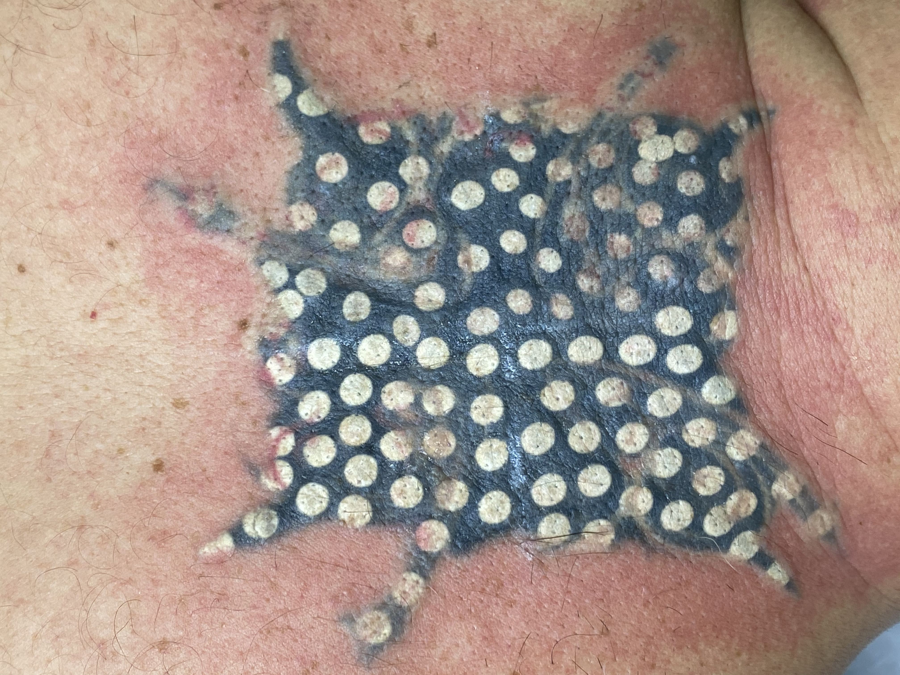
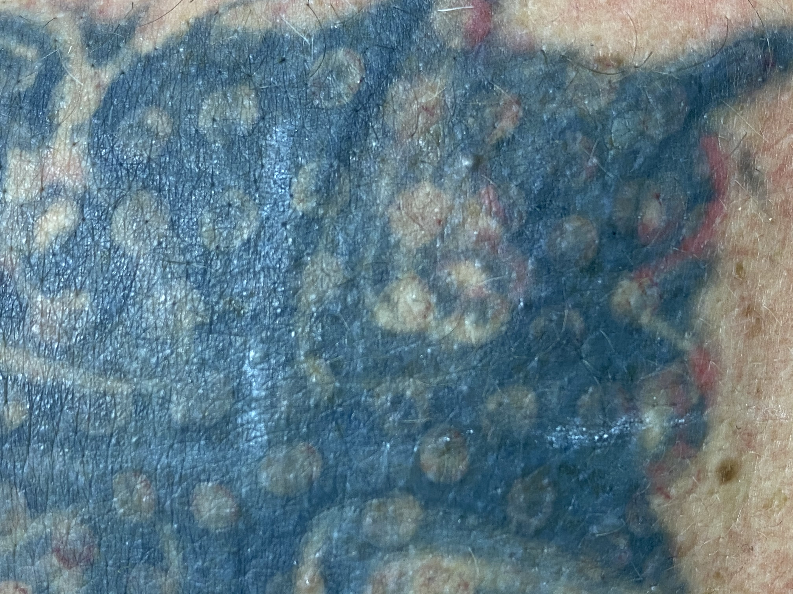
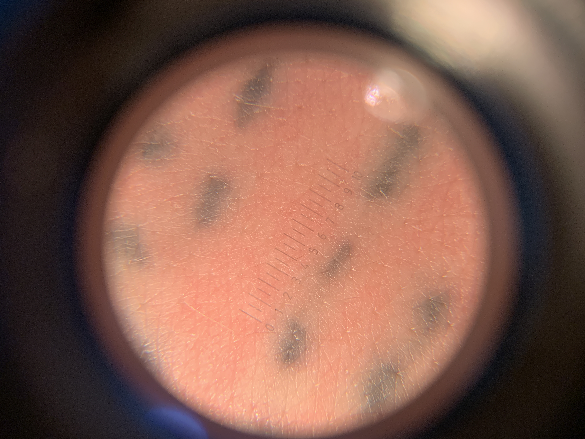
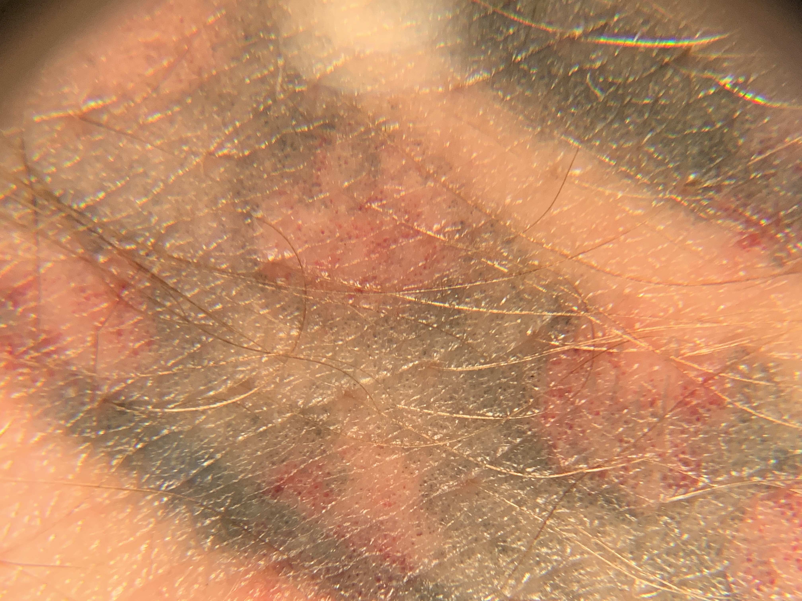
Патент — фиксация первичного наблюдения.
Клиника с тех пор ушла дальше.
48 часов — минимальный интервал между этапами.
В 2018 я хотел показать максимально быструю схему — и это работало. Но не идеально.
10–14 дней между этапами.
За это время воспалительный ответ полностью стихает, поверхностные корочки отваливаются, кожа готова принять новую вспышку без суммирующегося стресса.
Клинический эффект: меньше эритемы во время второго этапа, лучшая переносимость пациентами, реже возникает гиперпигментация в «мостиках» между пятачками.
В патенте — 50% площади обрабатывается на первом этапе (шахматная сетка с шагом = диаметру пятна). Сегодня я часто снижаю до 30% — особенно на сложных случаях.
В патенте — фиксированное значение 5,5 Дж/см². Сегодня диапазон шире: 5–7 Дж/см² в зависимости от типа пигмента и глубины залегания.
Ниже 5 Дж/см² — пароуглеродной реакции не будет, метод «сдувается» до обычного дробления. Выше 7 — риск ожогов даже при криоохлаждении.
Пароуглеродная реакция — свойство чистого углерода. Другие пигменты по-другому взаимодействуют с лазерным излучением, и «эффект в моменте» не получить.
Carbon Black — сажа, основа большинства чёрных красок для тату и татуажа.
TiO₂ (диоксид титана) — телесные тона татуажа. Требует другого подхода.
Оксиды железа, органика — красные, коричневые, охра. Реагируют на 532 нм, а не 1064.
Компактный однокристальный Nd:YAGNeodymium-doped Yttrium Aluminum Garnet — лазерная среда. на пятне 4–5 мм не выдаст плотность 5,5 Дж/см². Предел — 2,5–3 Дж/см² и только на мелком пятне. Метод работает только на стационарных лазерах с достаточной пиковой мощностью и Flat Top профилем луча.
Если татуировку уже пытались удалять — особенно компактным лазером — пигмент раздроблён на более мелкие и более устойчивые фрагменты. Пароуглеродной реакции не будет. Метод работает только на нетронутых тату.
Отдельное предупреждение новичкам: метод требует опыта. Порог плотности энергии узок — с одной стороны нет реакции, с другой пузыри. Начинающим специалистам я его не рекомендую.
Патент RU 2 692 936 C1 · опубликован 28.06.2019
В свободном доступе на ФИПС.
Готов ответить на любые вопросы — от физики метода до конкретных клинических случаев.